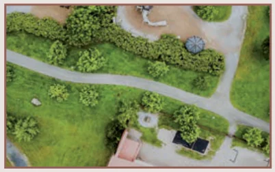
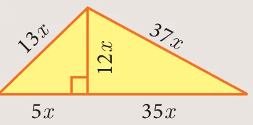
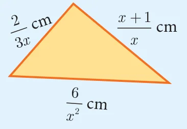

If \(x = \frac{a^2 + 3a - 4}{3a^2 - 3}\) and \(y = \frac{a^2 + 2a - 8}{2a^2 - 2a - 4}\) find the value of \(x^2y^{-2}\).
If a polynomial \(p(x) = x^2 - 5x - 14\) is divided by another polynomial \(q(x)\) we get \(\frac{x - 7}{x + 2}\), find \(q(x)\).
Activity 1

The length of a rectangular garden is the sum of a number and its reciprocal. The breadth is the difference of the square of the same number and its reciprocal. Find the length, breadth and the ratio of the length to the breadth of the rectangle.

Find the ratio of the perimeter to the area of the given triangle.
Addition and Subtraction of Rational Expressions
Addition and Subtraction of Rational Expressions with Like Denominators
Add or Subtract the numerators
Write the sum or difference of the numerators found in step (i) over the common denominator.
Reduce the resulting rational expression into its lowest form.
Addition and Subtraction of Rational Expressions with unlike Denominators
Determine the Least Common Multiple of the denominator.
Rewrite each fraction as an equivalent fraction with the LCM obtained in step (i). This is done by multiplying both the numerators and denominator of each expression by any factors needed to obtain the LCM.
Follow the same steps given for doing addition or subtraction of the rational expression with like denominators.
Progress Check
Write an expression that represents the perimeter of the figure and simplify.

Find the base of the given parallelogram whose perimeter is \(\frac{4x^2 + 10x - 50}{(x - 3)(x + 5)}\)